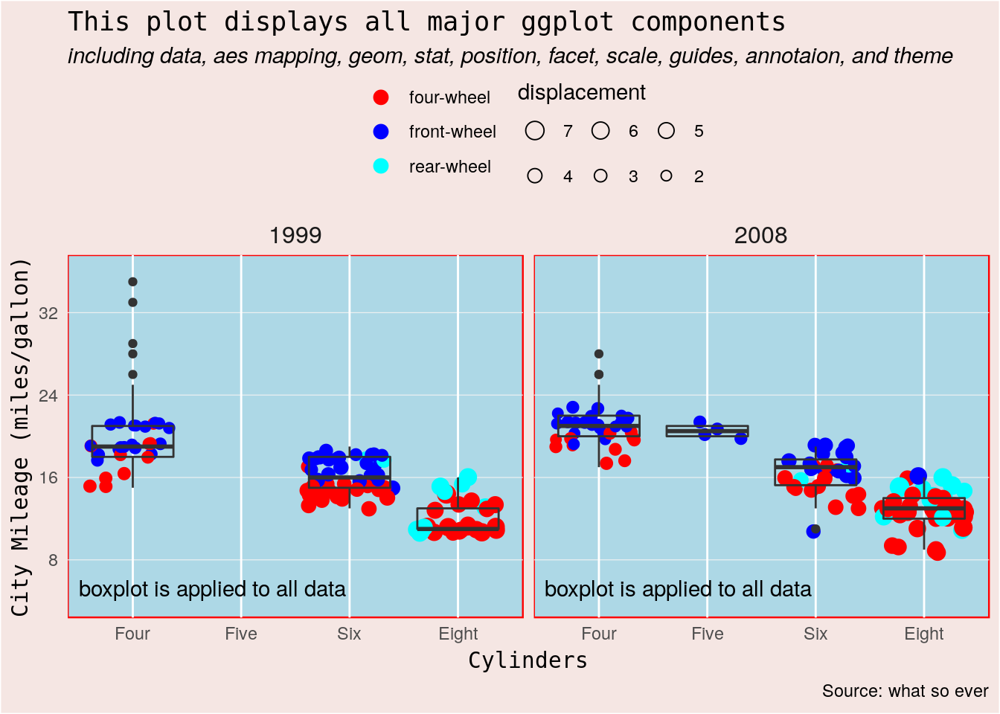

Extract US Census 2010 data with data.table and dplyr
This post explains how to extract information from the original dataset of the US 2010 census summary file 1 with urban/rural update, using data.table or dplyr package in R.
Why do we want to work with the original data? You may ask, when there are already R packages, such as UScensus2010, censusapi, and tidycensus, which help user get the data.
The biggest benefit is that you will have full access to all the census 2010 data. The total size of the US 2010 national census summary 1 file with urban/rural update is nearly 150Gb, which is too heavy to be included as dataset in a package. The stand-alone UScensus2010 package only delivers selected demographic data. Others provide an access to United States Census Bureau’s APIs, which also offers selected data. By dealing with the original data directly, you can extract whatever data you want.
In recent years, fast development of packages data.table and dplyr makes it possible for R to process original 2010 census data in a reasonable time frame. In the following example, I retrieved the latitude, longitude, population of all race and of black people living in each census block in the city of South Bend Indiana. The whole process takes about 4 seconds on a four years old laptop. With these data in hand we can plot nicely where black people live down to census block level on a map downloaded from GoogleMap. In a city most census blocks are equivalent to street blocks.

This post is organized in this order: I will first give a brief introduction to the 2010 census summary file 1 with urban/rural update. Then I will show how to extract data step by step using R and data.table package with the example shown above. The codes are verbose in this section as I want to show the details. To clean it up I will then give a more concise codes that use pipe operator from magrittr package. As many users are more familiar with dplyr package, I will also translate the data.table code to dplyr code. The dplyr approach is sufficiently fast for most applications.
File structure of the census 2010 summary 1 file
The 2010 census data with urban/rural update can be downloaded from United States Census Bureau official site. The total size is nearly 150 GB so make sure you have enough hard drive space for it. The data is split into 50 states and DC. Click on a state, for example, Indiana, there is a file named in2010.ur1.zip. Download this file and unzip it to a folder named with the abbreviation “IN”. Do this for all other state and DC.
Inside the folder “IN/” there are a geographic header record file named ingeo2010.ur1 and 48 data files named as in000012010.ur1, in000022010.ur1, …, in000482010.ur1. The first two characters in is the abbreviation of Indiana. The file extension ur1 stands for summary file 1 with urban rural update. The last four numbers 2010 before file extension indicate the census year 2010. The numbers 00001, 00002, …, and 00048 are the sequence of the files. These files are called file 01, file 02, …, and file 48 in the techinical documentation of the summary file 1. The documentation is our dictionary in using these files and we will talk more about it later.
The geographic header record file ingeo2010.ur1 contains the geographic information. It has 331556 lines; each line corresponds to a geographic entity in the census data of Indiana. A geographic entity can be a state, a county, a city, a census tract, a census block etc. A line can be up to 500 characters long, including spaces. Unique to each line is the logical record number, which is 7 characters long, located from 19 to 25 characters in a line. Page 2-8 of the technical documentation lists all geographic field in a line. Each field is assigned with a short reference code. Here are list of frequently use ones:
| geographic field | reference | starting position | ending position |
|---|---|---|---|
| logical record number | LOGRECNO | 19 | 25 |
| summary level | SUMLEV | 9 | 11 |
| geographic component | GEOCOMP | 12 | 13 |
| county FIPS | COUNTY | 30 | 32 |
| place FIPS | PLACE | 46 | 50 |
| Metropolitan Area FIPS | CBSA | 113 | 117 |
| internal point (latitude) | INTPTLAT | 337 | 347 |
| internal point (longitude) | INTPTLON | 348 | 359 |
The data files contain the recorded census data. They are .csv files, that is, each data field is separated by a comma. For example, file 02 contains the population in urban and rural area. Its 5th field is the logical record number that matches the geographic header record file. The 6th field is total population, 7th field urban population, 8th field population in urbanized area, … The properties of each field is listed in the technical documentation. If you want to know the details of, for example file 17, just search in the pdf file of the technical documentation for “file 17” and read through the description.
Extract the 2010 census data step by step
Say we are interested in the population and race in the city of South Bend, Indiana and we want to plot these data on a map at census block level, what should we do? I will use this as an example to show how to extract 2010 census data in detail.
read and extract geographic data
Let’s first take a look at the geographic header record file. We convert it to a data.table of which each row is a line in the file. Each line is a string of characters without separator, so we read it into only one column.
library(data.table)
# change path to data based on your local directories
geo_file <- fread(paste0(path_to_data, "IN/ingeo2010.ur1"),
sep = "\n",
header = FALSE)
# show total number of lines
dim(geo_file)## [1] 331556 1# display the first line
head(geo_file, 1)## V1
## 1: UR1ST IN04000000 00000012318 92789193658 1537004191Indiana AN 6483802 2795541+39.9030256-086.283950300 00448508This file has 331556 lines. There are many blank spaces in a line as a geographic entity usually does not have all the geographic fields.
We want get the logical record number, which is used to match those in data file, and latitude and longitude for plot in map. We want to keep the FIPS of place so that later on we can locate South Bend city with its FIPS number. We also want keep summary levels as we only want data at census blocks level. The references of geographic fields are used as column names.
geo <- geo_file[, .(LOGRECNO = as.numeric(substr(V1, 19, 25)),
SUMLEV = substr(V1, 9, 11),
PLACE = substr(V1, 46, 50),
INTPTLAT = as.numeric(substr(V1, 337, 347)),
INTPTLON = as.numeric(substr(V1, 348, 359)))]
geo## LOGRECNO SUMLEV PLACE INTPTLAT INTPTLON
## 1: 1 040 39.90303 -86.28395
## 2: 2 040 40.13668 -86.23489
## 3: 3 040 40.43883 -86.21876
## 4: 4 040 40.12984 -86.21021
## 5: 5 040 39.92054 -86.27358
## ---
## 331552: 331552 970 41.63835 -85.55221
## 331553: 331553 970 41.67686 -87.49205
## 331554: 331554 970 41.15086 -85.66872
## 331555: 331555 970 39.35130 -86.03878
## 331556: 331556 970 41.63419 -87.20929The column PLACE has a lot of missing values, as many geographic entities does not belong to any place.
Now we can extract geographic data of South Bend. An easy way to find its FIPS number is from its Wikipedia page. South Bend’s FIPS is 18-71000. The first two digits are the FIPS of Indiana, so the unique FIPS in Indiana for South Bend is 71000. Let’s keep only the rows for South Bend (sb).
sb_geo <- geo[PLACE == "71000"]
sb_geo## LOGRECNO SUMLEV PLACE INTPTLAT INTPTLON
## 1: 241621 070 71000 41.61875 -86.24093
## 2: 241622 080 71000 41.63354 -86.22549
## 3: 241623 085 71000 41.63354 -86.22549
## 4: 241624 091 71000 41.63525 -86.21833
## 5: 241625 090 71000 41.63525 -86.21833
## ---
## 5461: 321382 614 71000 41.72872 -86.26427
## 5462: 324739 624 71000 41.70951 -86.20096
## 5463: 324774 624 71000 41.66799 -86.23096
## 5464: 324810 624 71000 41.66797 -86.27524
## 5465: 324851 624 71000 41.70286 -86.27826This geographic data includes all summary levels. As we only want the census block level data, we further filter with SUMLEV == "100". At this stage we get the geographic data we want.
sb_block <- sb_geo[SUMLEV == "100"]
sb_block## LOGRECNO SUMLEV PLACE INTPTLAT INTPTLON
## 1: 241626 100 71000 41.63613 -86.21864
## 2: 241627 100 71000 41.63670 -86.21659
## 3: 241628 100 71000 41.63573 -86.22172
## 4: 241629 100 71000 41.63182 -86.22022
## 5: 241630 100 71000 41.63367 -86.22093
## ---
## 5002: 252566 100 71000 41.69486 -86.25132
## 5003: 252567 100 71000 41.69649 -86.25815
## 5004: 253091 100 71000 41.73058 -86.35508
## 5005: 253092 100 71000 41.73035 -86.35565
## 5006: 253093 100 71000 41.72831 -86.35573Are we sure we get the correct geographic data? We can plot the latitude and longitude directly on a map. From the map below you will also get a sense of what a census block is; it is basically a street block in urban area. We need internet connection to download map data from Google Map.
map <- get_map("south bend, indiana", zoom = 13)
ggmap(map) +
geom_point(data = sb_block, aes(INTPTLON, INTPTLAT), color = "red", alpha = 0.3)
read and extract population and race data
From the technical documentation we know that population and race information is in file 03. So let’s read this file.
f03 <- fread(paste0(path_to_data, "IN/in000032010.ur1"), header = FALSE)##
Read 72.4% of 331556 rows
Read 331556 rows and 199 (of 199) columns from 0.134 GB file in 00:00:03# number of rows and columns
dim(f03)## [1] 331556 199It has 199 columns; which ones are what we want? We still go back to the technical documentation, page 6-22, and read the description for file 03. The 5th field is logical record number, 6th the total population data and 8th the black population data. Each population data field also has a reference but is hard to follow. For clarity we name these column in plain English. So all the data we need in Indiana is
population <- f03[, .(LOGRECNO = V5,
total_popul = V6,
black_popul = V8)]
population## LOGRECNO total_popul black_popul
## 1: 1 6483802 591397
## 2: 2 4697100 580128
## 3: 3 3836584 560288
## 4: 4 860516 19840
## 5: 5 1786702 11269
## ---
## 331552: 331552 18918 24
## 331553: 331553 4636 154
## 331554: 331554 10537 25
## 331555: 331555 560 100
## 331556: 331556 0 0From here it is easy to get the population in South Bend at census block level: just join the data to sb_block by logical record number:
sb_block_popl <- population[sb_block, on = .(LOGRECNO)]
sb_block_popl## LOGRECNO total_popul black_popul SUMLEV PLACE INTPTLAT INTPTLON
## 1: 241626 28 10 100 71000 41.63613 -86.21864
## 2: 241627 0 0 100 71000 41.63670 -86.21659
## 3: 241628 52 16 100 71000 41.63573 -86.22172
## 4: 241629 279 21 100 71000 41.63182 -86.22022
## 5: 241630 42 1 100 71000 41.63367 -86.22093
## ---
## 5002: 252566 64 0 100 71000 41.69486 -86.25132
## 5003: 252567 0 0 100 71000 41.69649 -86.25815
## 5004: 253091 0 0 100 71000 41.73058 -86.35508
## 5005: 253092 0 0 100 71000 41.73035 -86.35565
## 5006: 253093 0 0 100 71000 41.72831 -86.35573There is no need to keep the blocks where there are no people lives.
sb_block_popul <- sb_block_popl[total_popul > 0]
sb_block_popul## LOGRECNO total_popul black_popul SUMLEV PLACE INTPTLAT INTPTLON
## 1: 241626 28 10 100 71000 41.63613 -86.21864
## 2: 241628 52 16 100 71000 41.63573 -86.22172
## 3: 241629 279 21 100 71000 41.63182 -86.22022
## 4: 241630 42 1 100 71000 41.63367 -86.22093
## 5: 241631 48 3 100 71000 41.63525 -86.21833
## ---
## 3780: 252543 75 6 100 71000 41.66027 -86.32578
## 3781: 252551 36 0 100 71000 41.69367 -86.24275
## 3782: 252559 360 11 100 71000 41.69560 -86.25924
## 3783: 252561 14 0 100 71000 41.69583 -86.25781
## 3784: 252566 64 0 100 71000 41.69486 -86.25132plot on map at block level
Now we can plot total and black population on the map. This is the same map we saw at the beginning of the post. It is not shown here.
ggmap(map) +
geom_point(data = sb_block_popul,
aes(INTPTLON, INTPTLAT, size = total_popul, color = "red"),
alpha = 0.6) +
# remove row with 0 black population, otherwise show a small dot
geom_point(data = sb_block_popul[black_popul > 0],
aes(INTPTLON, INTPTLAT, size = black_popul, color = "blue"),
alpha = 0.6) +
scale_size_area(breaks = c(1, 50, 100, 300, 600, 1000)) +
scale_color_identity(guide = "legend",
breaks = c("red", "blue"),
label = c("all", "black")) +
labs(color = "race", size = "population") +
guides(size = guide_legend(override.aes = list(shape = 1)))More concise code
the data.table way
The above codes that select South Bend data can be squeezed with pipe operator %>% to get rid of intermediate variables.
library(data.table)
library(magrittr)
## An example to retrieve and plot the total and black population at the census
## black level of the city South Bend in Indiana
# the directory holding all census 2010 data
path_to_data <- "~/dropbox_datasets/US_2010_census/"
# geographic record of South Bend (sb) at census block level
sb_block <- fread(paste0(path_to_data, "IN/ingeo2010.ur1"), sep = "\n",
header = FALSE) %>%
.[, .(LOGRECNO = as.numeric(substr(V1, 19, 25)),
SUMLEV = substr(V1, 9, 11),
PLACE = substr(V1, 46, 50),
INTPTLAT = as.numeric(substr(V1, 337, 347)),
INTPTLON = as.numeric(substr(V1, 348, 359)))] %>%
.[PLACE == "71000" & SUMLEV == "100"]
# total and black population of South Bend at census block level
sb_block_popul <- fread(paste0(path_to_data, "IN/in000032010.ur1"),
header = FALSE) %>%
.[, .(LOGRECNO = V5,
total_popul = V6,
black_popul = V8)] %>%
.[sb_block, on = .(LOGRECNO)] %>%
.[total_popul > 0]the dplyr approach
We still use data.table’s fread() to read the data but use dplyr functions to process data.
library(data.table)
library(dplyr)
path_to_data <- "~/dropbox_datasets/US_2010_census/"
sb_block <- fread(paste0(path_to_data, "IN/ingeo2010.ur1"), sep = "\n",
header = FALSE) %>%
transmute(
LOGRECNO = as.numeric(substr(V1, 19, 25)),
SUMLEV = substr(V1, 9, 11),
PLACE = substr(V1, 46, 50),
INTPTLAT = as.numeric(substr(V1, 337, 347)),
INTPTLON = as.numeric(substr(V1, 348, 359))
) %>%
filter(PLACE == "71000" & SUMLEV == "100")
sb_block_popul <- fread(paste0(path_to_data, "IN/in000032010.ur1"), header = FALSE) %>%
transmute(
LOGRECNO = V5,
total_popul = V6,
black_popul = V8
) %>%
right_join(sb_block, by = "LOGRECNO") %>%
filter(total_popul > 0)